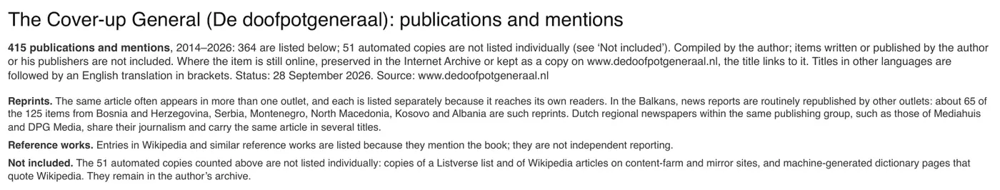

Exhibit · List
Publications about and mentions of The Cover-up General, 2014–2026
The passage
“415 publications and mentions, 2014–2026: 364 are listed below; 51 automated copies are not listed individually (see ‘Not included’). Compiled by the author; items written or published by the author or his publishers are not included.” Page 1, the heading of the list. The notes below it deal with reprints, regional newspapers, reference works and the automated copies that are not listed.

Why this document matters
This list counts 415 publications and mentions of the book since 2014 and shows how that number is made up: reprints in the Balkans and in Dutch regional newspapers are listed per outlet and explained, 51 automated copies on content-farm and mirror sites are counted but not listed individually, and items by the author or his publishers are left out. The essay’s figure of more than four hundred rests on it.
Provenance
- Document
- List in PDF, A4 landscape, 17 pages, in English
- Compiled by
- Edwin Giltay, from the media archive he has kept since 2014
- Contents
- 415 publications and mentions, 2014–2026: 364 listed, 51 automated copies counted but not listed
- Excluded
- Items written or published by the author or his publishers
- Status
- 27 September 2026
Cited in: the essay ‘The Ban Fell, the Book Stood’ in the chapter (5) ‘More Than a Banned Book’.
Exhibit page: https://
Document: https://
Last modified 28 September 2026, accessed 3 October 2026.

This page is an exhibit to the book The Cover-up General by Edwin Giltay and its accompanying website.